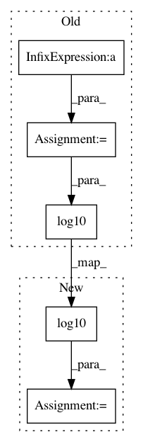

ad7292d5ce9dd3f713f4c091e188615a5ac95f97,librosa/core/time_frequency.py,,A_weighting,#Any#Any#,842
Before Change
const = np.array([12200, 20.6, 107.7, 737.9])**2.0
r_a = const[0] * f_sq**2
r_a /= (f_sq + const[0]) * (f_sq + const[1])
r_a /= np.sqrt((f_sq + const[2]) * (f_sq + const[3]))
weights = 2.0 + 20 * np.log10(r_a)
if min_db is not None:
weights = np.maximum(min_db, weights)
After Change
const = np.array([12200, 20.6, 107.7, 737.9])**2.0
weights = 2.0 + 20.0 * (np.log10(const[0]) + 4 * np.log10(frequencies)
- np.log10(f_sq + const[0])
- np.log10(f_sq + const[1])
- 0.5 * np.log10(f_sq + const[2])
- 0.5 * np.log10(f_sq + const[3]))
if min_db is not None:
weights = np.maximum(min_db, weights)
In pattern: SUPERPATTERN
Frequency: 3
Non-data size: 5
Instances
Project Name: librosa/librosa
Commit Name: ad7292d5ce9dd3f713f4c091e188615a5ac95f97
Time: 2015-02-15
Author: brian.mcfee@nyu.edu
File Name: librosa/core/time_frequency.py
Class Name:
Method Name: A_weighting
Project Name: matplotlib/matplotlib
Commit Name: 07a9450b407ee5dc89b82e388840d510b009ef3e
Time: 2017-10-20
Author: anntzer.lee@gmail.com
File Name: lib/matplotlib/scale.py
Class Name: LogitTransform
Method Name: transform_non_affine
Project Name: matplotlib/matplotlib
Commit Name: 668ff586c12a3c577ddd985a375030381e80539c
Time: 2017-10-25
Author: tcaswell@gmail.com
File Name: lib/matplotlib/scale.py
Class Name: LogitTransform
Method Name: transform_non_affine